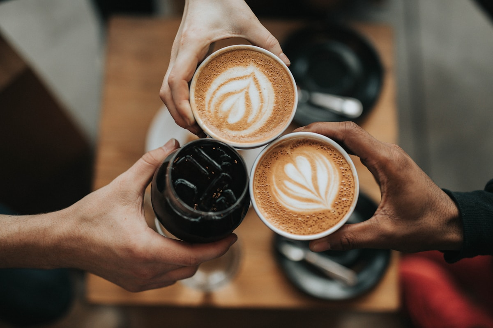

Café con origen
Seleccionamos granos de productores que comparten nuestra forma honesta y dedicada de hacer las cosas.
Café de especialidad · Desde 2018
Un lugar simple para tomar buen café, comer algo rico y bajar el ritmo. Hecho con ingredientes honestos y mucho cariño.

Lo que hacemos
Un espacio cálido y luminoso diseñado para desconectar, disfrutar de buen café y compartir con quienes más quieres.
Seleccionamos granos de productores que comparten nuestra forma honesta y dedicada de hacer las cosas.
Pastelería y preparaciones simples elaboradas cada mañana en nuestra cocina con ingredientes nobles.
Conexión rápida, música seleccionada y rincones tranquilos ideales para encontrarte con tu ritmo diario.

Nuestra esencia
Creemos que una buena pausa puede cambiar el día. Por eso cuidamos cada detalle: desde el origen del grano hasta la luz de cada mesa.
Conoce nuestro equipo →